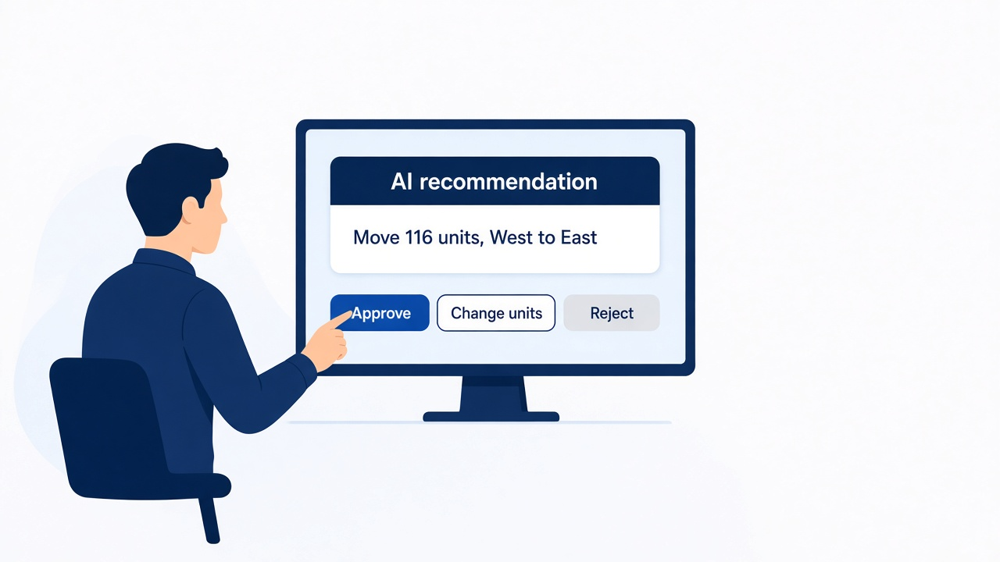

StreamHouse Demos
Power AI Agents with StreamHouse to manage Inventory & demand
The problem
Peak holiday season is uneven. Demand is different in every region, on every channel (store or web), and for every product. Inventory has to be managed across all three at once.
A promotion tells you that interest went up. It does not tell you which location will run out of stock this afternoon, or which location is sitting on stock it will never sell. If a shopper finds an empty shelf, or an online order waits for stock that is sitting in another region, that is a sale you already had and lost.
Solution overview
StreamHouse keeps one live picture of demand and stock. The dashboard, the AI agent, and analytics all use that picture. A sale does not sit in a file until the next morning.
The path from a sale to a stock move has five steps:
- Connectors bring data from point-of-sale, e-commerce, warehouse, and planning systems into Kafka the moment it happens.
- Flink turns that stream into a demand forecast and a stock-health reading. Flink processing walks through those two jobs. Lightning Tables hold the result.
- The Real-Time Context Engine sits on top of those tables. It gives the dashboard and the AI agent fast answers about the current state of the business.
- Tableflow copies the history into the lakehouse for analytics.
- When a planner approves a move, the approval goes back into Kafka. Sink connectors then pass it to the order and warehouse systems.
The agent that proposes the moves can run inside Confluent Cloud as a Streaming Agent, or as an application you host yourself. Either way, every decision is saved as its own event, so you can always see what was decided and why.
The same path, with the Kafka topic on each step. Flink table names stay in the boxes. The topic name is the stream those tables read or write.
Flink processing explains how those jobs run. The agent and the approval gate come after that.
Five platform pillars
| Pillar | Confluent product | What it does |
|---|---|---|
| Stream | Kafka on Confluent Cloud | Keeps a lasting record of every sale, stock movement, promotion, and supplier order. |
| Connect | Managed connectors | Brings in data from point-of-sale, e-commerce, order, warehouse, and ERP systems. Also sends approved actions back out. |
| Process | Confluent Cloud for Apache Flink | Adds up sales, builds the hourly forecast, compares forecast to stock, and spots stock-outs and overstock. |
| Govern | Stream Governance and Schema Registry | Sets data rules (contracts) that block bad records before they reach the forecast. |
| Query | Lightning Tables, with the Real-Time Context Engine on top. Tableflow for history. | Lightning Tables store the live state. The Context Engine serves it to the dashboard and the agent. Tableflow sends history to the lakehouse. |
Topics
A topic is a named stream of events in Kafka. This design uses five source topics and seven derived topics, written by Flink or the agent. Schema Registry rejects a record that breaks its contract.
Events for the same product and location share one key. That keeps them in the order they happened.
| Topic | Written by | Read by |
|---|---|---|
| sales.pos-events | Store point of sale | Flink sales rollups, Tableflow |
| sales.ecom-events | Web and app orders | Flink sales rollups, Tableflow |
| inventory.movements | Warehouse and order systems | Flink inventory position |
| supplier.orders | ERP | Flink restock logic |
| merch.promo-events | Planning tools | Flink forecast |
| demand.sales-rollup | Flink | Forecast, Lightning Tables |
| demand.forecast | Flink | The inventory.health job, Lightning Tables |
| inventory.position | Flink | The inventory.health job, Lightning Tables |
| inventory.health | Flink | Lightning Tables, then the Context Engine and the agent |
| ai.recommendations | Streaming Agent | Lightning Tables, then the Context Engine and the approval screen |
| ai.approvals and ai.actions | Approval screen, then Flink | Order and warehouse sink connectors |
Flink processing
Flink does this calculation before any agent runs. There are two lanes, and they meet once. The agent later reads the result. It does not rebuild it.
Sales. Each sale is one event. Flink groups those events into demand_windowed: one simulated hour of sales for one product, in one region, on one channel. When that hour closes, ML_FORECAST predicts the next six hours and writes one row to the table demand_forecast. Until 16 hours of history exist, the forecast values are empty, and the health row is marked WARMING_UP.
demand_forecast is the table. forecast_next is one column on that row. ML_FORECAST returns six hours. forecast_next is only the first hour: predicted units for the next hour, and never below zero. The other five hours are added into another column, forecast_horizon. Later, stockout_risk divides on-hand stock by forecast_next to get hours of cover. It does not forecast again.
Stock. Warehouse movements and supplier orders update inventory_latest. That table is how many units are in the location now, and how many are already on the way, for the same product and location.
The join. When the forecast hour closes, stockout_risk joins demand_forecast to inventory_latest as of that same hour. The join writes cover and risk. The Flink table is stockout_risk. The Kafka topic is inventory.health.
The next section lists every field on that health record and shows the join. How forecast_next is calculated shows the forecast statement.
What inventory.health carries
inventory.health is the topic the agent acts on. Each record answers two questions for one product, in one region, on one channel:
- How many hours of stock are left?
- Is this location running out, or holding too much?
Where the record comes from. Stores, the website, and the warehouse never write to this topic. They only publish raw events (a sale, a stock movement) to their own topics. From those raw events, Flink builds two pictures:
- the hourly forecast (how much we expect to sell), and
- the current stock position (how much we have and what is on the way).
Each time an hour of the forecast closes, one Flink job joins the two pictures and adds one record to inventory.health. In the repo, that job is flink/04b_stockout_risk.sql, and the Flink table is called stockout_risk.
CREATE TABLE `stockout_risk` (
WATERMARK FOR `window_time` AS `window_time` - INTERVAL '1' SECOND
)
DISTRIBUTED BY (sku, region, channel) INTO 3 BUCKETS
WITH (
'value.fields-include' = 'all'
)
AS
SELECT
f.sku,
f.region,
f.channel,
f.window_time,
f.units_sold,
f.forecast_next,
f.forecast_horizon,
f.upper_horizon,
f.typical_rate,
f.promo_active,
i.on_hand,
i.on_order,
CASE
WHEN f.forecast_next IS NULL OR f.forecast_next <= 0 THEN CAST(NULL AS DOUBLE)
ELSE ROUND(CAST(i.on_hand AS DOUBLE) / f.forecast_next, 1)
END AS periods_of_cover,
CASE
WHEN i.on_hand <= 0 THEN 'OUT_OF_STOCK'
WHEN f.forecast_next IS NULL THEN 'WARMING_UP'
WHEN i.on_hand < f.forecast_horizon THEN 'HIGH'
WHEN i.on_hand < f.upper_horizon THEN 'MEDIUM'
WHEN CAST(i.on_hand AS DOUBLE)
/ GREATEST(f.typical_rate, f.forecast_next, 0.5) > 120 THEN 'OVERSTOCK'
ELSE 'LOW'
END AS risk_level,
GREATEST(CAST(CEIL(f.upper_horizon) AS INT) - i.on_hand - i.on_order, 0) AS suggested_replenishment_units
FROM `demand_forecast` AS f
JOIN `inventory_latest` FOR SYSTEM_TIME AS OF f.window_time AS i
ON f.sku = i.sku
AND f.region = i.region
AND f.channel = i.channel;
The full statement is in flink/04b_stockout_risk.sql.
The agent only reads this topic. Writing a recommendation and moving stock happen on other topics.
How each record is stored. Each record is an Avro message. When Flink creates the table on Confluent Cloud, it registers the schema in Schema Registry. That means a dashboard or an agent can read the record without keeping its own copy of the layout. The Kafka key is product + region + channel, so all readings for one location stay in order.
The topic is an append-only log: every closed forecast hour adds a new record. This keeps a history of how risk changed during the day. A compacted topic would keep only the latest record per key. This design needs the history, so it does not use one.
Fields
| Field | What the agent uses it for |
|---|---|
| sku, region, channel | Which product and location this reading is about. These three fields are also the Kafka key. |
| window_time | The hour this reading applies to. The join uses it so stock and forecast come from the same moment. |
| units_sold | Units sold in the hour that just closed. |
| forecast_next | Units we expect to sell in the next hour. |
| forecast_horizon, upper_horizon | Expected units over the next six hours, and the high end of that range. The high end is used to size a restock. |
| typical_rate | The location's normal pace. It stops a quiet hour from being mistaken for overstock. |
| promo_active | Whether a promotion is already lifting demand here. |
| on_hand, on_order | Units in the location now, and units already on the way from the supplier. |
| periods_of_cover | On-hand stock divided by the next-hour forecast. In other words, how many hours the stock will last. The agent compares this to its policy. |
| risk_level | One of OUT_OF_STOCK, HIGH, MEDIUM, LOW, OVERSTOCK, or WARMING_UP (the forecast is still collecting history). The agent is called for the risky values, not for healthy rows. |
| suggested_replenishment_units | A starting quantity: the high end of the six-hour forecast, minus units on hand, minus units already on order. |
How cover and risk are worked out
The join takes forecast_next from the forecast and looks up the stock position as of the same hour. It then sets periods_of_cover and risk_level:
- Cover = on-hand stock ÷ next-hour forecast.
- Risk compares on-hand stock with the six-hour forecast. Zero stock is OUT_OF_STOCK. If there is stock but no forecast yet, the row is WARMING_UP.
How forecast_next is calculated
The job that writes inventory.health does not calculate forecast_next itself. It reads that column from demand_forecast.
Here is how the forecast is made:
- Each row of demand_windowed is one simulated hour of sales for one product, region, and channel.
- ML_FORECAST learns the pattern in that history using a statistical model called ARIMA. It then predicts the next 6 hours.
- forecast_next is the first of those 6 hours. It can never go below zero.
- The model needs 16 hours of history before it will forecast. Until then, forecast_next is empty (null), and the inventory.health job marks the row WARMING_UP.
GREATEST(fc[1].forecast_value, 0.0) AS forecast_next
...
ML_FORECAST(
units_sold,
CAST(window_time AS TIMESTAMP(3)),
JSON_OBJECT(
'horizon' VALUE 6,
'minTrainingSize' VALUE 16,
'maxTrainingSize' VALUE 256,
'enableStl' VALUE false
)
) OVER (
PARTITION BY sku, region, channel
ORDER BY window_time
RANGE BETWEEN UNBOUNDED PRECEDING AND CURRENT ROW
) AS fc
What the settings mean:
| Setting | Meaning |
|---|---|
| horizon = 6 | Predict the next 6 hours. |
| minTrainingSize = 16 | Wait for at least 16 hours of history. |
| maxTrainingSize = 256 | Use at most the latest 256 hours. |
| enableStl = false | Do not split the data into trend and seasonal parts first. |
| PARTITION BY sku, region, channel | Build a separate forecast for each product, region, and channel. |
The full statement is in flink/03_demand_forecast.sql. The file flink/04b_stockout_risk.sql reads the column when it writes inventory.health.
Where the AI agent is hosted
The agent's job is the same wherever it runs. It watches demand and stock as they change, across products, regions, and channels. It then proposes one of three things: a transfer, a supplier order, or a markdown. A planner can approve each move, or the team can let the agent act on its own.
There are two ways to host it:
| Option | Where it runs | How it works |
|---|---|---|
| Confluent Intelligence Streaming Agents | On Confluent Cloud, as a Flink job. There is no separate agent server to run. | Each inventory-health event wakes the agent. It reasons with a model, calls tools, and writes a recommendation back to Kafka. |
| An application you host | Your own service, reading the same topics. The live demo on this site works this way, without a cluster. | Your service runs its own loop. It reads the stream, decides, and publishes the same recommendation and approval events. |
Streaming Agents on Confluent Intelligence
Confluent Intelligence is the managed, real-time AI layer on Kafka and Flink. A Streaming Agent is an agent that reacts to events and runs as a Flink job on Confluent Cloud, right next to the forecast and the stock position. It does not poll a database, and it does not wait for a nightly batch.
You set it up with three things: a model, a prompt, and tools. You can do this in Flink SQL or in the Agent Management Console.
Then a continuous Flink statement calls the agent, using AI_RUN_AGENT, for each inventory-health row that needs a decision. The agent works through its reason-and-tool loop and returns one result. The statement writes that result to ai.recommendations.
By the time the agent runs, Flink processing has already written inventory.health. The agent is called only when a row says a location is running out or holding too much. A healthy row does not wake the model. The agent does not recompute the forecast. Its job is to decide what to do about a risk that Flink has already measured.
Tools the agent can call
The prompt sets the policy:
- Act when cover falls below the trigger.
- Refill toward a target.
- Leave every donor region enough stock for its own forecast.
- Treat a supplier order as too late if it would arrive after the stock-out.
The model does not make up these numbers. It calls tools, and the tools read the current tables.
| Tool | Where it runs | What it does |
|---|---|---|
| Find spare stock | Flink function | Looks across regions for the same product and channel. Returns on-hand, forecast, and how many units each region can give while keeping enough for itself. |
| Supplier timing | Flink function | Returns how long a new supplier order takes, and how many units are already on order for this location. |
| Propose transfer | Flink function | Returns a recommendation: from, to, units, and the two reasons. It does not move stock. |
| Propose markdown | Flink function | Returns a recommendation to discount a location that will not sell through, when no other region needs the stock. |
| Escalate | Flink function | Returns a recommendation to speed up the supplier, because no region can spare the units. |
The lookup tools are Flink functions. They read live state through the Real-Time Context Engine, which reads Lightning Tables. They do not use a copy of last night's warehouse file. The propose tools only shape the recommendation. You would use an MCP tool when a step must call a system outside Flink, such as a carrier cutoff time. This stock decision does not need one, because the numbers are already on the stream.
One health event, one recommendation
Here is what happens, step by step, for a single inventory-health event:
- The input. The statement passes in the health row: product, region, channel, on-hand, on-order, forecast, cover, risk, and whether a promo is running.
- The research. The agent calls find spare stock, then supplier timing. Now it knows who can give units, and whether a new purchase order would arrive in time.
- The choice. The agent picks one outcome. A transfer uses the smaller of what the short location needs and what the donor can spare. An escalation is used when every other region needs its own stock. A markdown is used when the location has too much stock and nowhere else is short.
- The result. The agent returns what it noticed, what it found, the action, the units, and the locations. The statement writes this as one event on ai.recommendations. The same key (product + location) keeps later events in order.
- The review. The Real-Time Context Engine, backed by Lightning Tables, shows the event on the dashboard. If approval is required, nothing goes to the warehouse until a planner approves. The approval is its own event. A later Flink job turns it into ai.actions, and a sink connector sends the transfer or order out. If the policy lets the agent act on its own, the action event is written without waiting.
- The clean-up. A later health event may show that the location is safe again (stock arrived, or the promo ended). A small Flink rule then withdraws the open recommendation. The model does not have to remember anything.
- The audit trail. The runtime logs every tool call and can replay the session. A planner can see why the agent chose a move. The same health event can be run again after you change the prompt or policy.
A holiday rush, as the agent sees it
Stores in North America East start selling a hero shoe much faster than the last forecast predicted. Cover falls below the trigger. Supplier timing says a new order would arrive after the store runs out.
Find spare stock returns North America West. After West keeps enough for its own forecast, it still has units to spare. The agent writes one transfer recommendation, West to East, with both reasons attached. The dashboard shows it, and the planner approves. The approval event becomes a warehouse transfer.
Two variations:
- If West were also short, the agent would escalate and ask the planner to speed up the supplier. It would not invent a transfer.
- If East instead held far more stock than it needed and no region was short, the agent would suggest a markdown.
Sample code
The demo pipeline runs the Streaming Agent inventory_agent on each risky stockout_risk row. Here is what it does:
- Reads stockout_risk (this is the inventory.health topic).
- Asks the Streaming Agent for one decision.
- Inserts the result into a different table, ai_recommendations (this is the ai.recommendations topic).
Terraform deploys this with the rest of the Flink jobs. The model is a Confluent managed LLM, so there is no external API key. On AWS the model is anthropic.claude-sonnet-4-6. The statements are flink/06b_model.sql, flink/06c_agent.sql, and flink/06e_run_agent.sql. The agent replies with one line, ORDER or MARKDOWN, and Flink writes that line to ai_recommendations.
CREATE AGENT `inventory_agent`
USING MODEL `inventory_llm`
USING PROMPT 'You are the inventory streaming agent. Reply with exactly one line: ORDER <region> <units> when the row is OUT_OF_STOCK or HIGH, or MARKDOWN <region> 0.2 when it is OVERSTOCK.'
WITH (
'max_iterations' = '3'
);
INSERT INTO `ai_recommendations`
SELECT
h.sku, h.region, h.channel, h.window_time,
agent.response AS decision
FROM `stockout_risk` AS h,
LATERAL TABLE(AI_RUN_AGENT('inventory_agent', h.risk_level, CONCAT(h.sku, '|', h.region, '|', h.channel))) AS agent
WHERE h.risk_level IN ('OUT_OF_STOCK', 'HIGH', 'OVERSTOCK');
Before you run it:
- Run make up. Terraform creates the managed model, the agent, and the insert. If the model name is not in your region, run SHOW MODELS and set managed_model_name to that name without the system. prefix.
- Healthy rows are filtered out by the WHERE clause, so the model is not called when nothing needs a decision.
Create and run Streaming Agents
Which hosting option should you pick?
- Choose Streaming Agents when the agent should live next to the data, and every decision should be an event on the stream.
- Choose your own hosted application when the agent already runs in another application and only needs the stream as its input and its record.
From a sales spike to an approved move
The agent proposes a stock move or a markdown. A planner approves it on the dashboard. If no region has spare stock, the agent escalates instead of inventing a transfer. The approval is itself an event on a topic.

When a person must approve each decision
Requiring approval does not change what the agent reads or what it recommends. It still reads inventory.health, and it still writes one decision to ai.recommendations. That write does not move any stock. The recommendation simply waits.

The planner has three choices:
- Approve: send the move on as proposed.
- Change units: keep the same move, but with a smaller quantity.
- Reject: send nothing. Stock stays where it is.
What happens, step by step:
- The Real-Time Context Engine, backed by Lightning Tables, shows the waiting recommendation on the dashboard: what the agent noticed, what it found, the action, and the units.
- The planner approves it, lowers the units to what the donor can spare, or rejects it. Each choice is an event on ai.approvals, recording the recommendation, the person, and the choice.
- A Flink job reads the approval and only then writes ai.actions. Sink connectors carry an approved transfer or markdown to the warehouse and order systems. A rejection writes no action.
- If a later health event shows the location is safe again before anyone answers, a Flink rule withdraws the open recommendation. The planner is not asked to approve a move the stock no longer needs.
Nothing reaches the warehouse while a recommendation is waiting.
The same topics are used when the team lets the agent act on its own. The only difference is that the action event is written without an approval event in front of it.
Why this design requires approval: in the peak holiday season, sending units to one region takes them from another region that may need them. A person should decide that trade-off.
Run the proof of concept
Two ways to see this design. The hosted walkthrough tells the story in the browser and does not need a cluster. The steps below stand the same pipeline up on Confluent Cloud and feed it mock holiday traffic.
The apply creates a Standard Kafka cluster on AWS us-east-1, Stream Governance Advanced, the source topics, Avro schemas, a Flink compute pool, and the Flink jobs through stockout_risk. A Python generator then writes the sales and stock events. The dashboard on your laptop reads the forecast and the health rows as Flink writes them.
Clone github.com/bjaggi/bjaggi.github.io first. The proof of concept lives in demos/streamhouse-inventory inside that repository. Change into that folder before any make command. A new terminal usually starts in your home directory, so repeat the cd there. If you cloned into a different directory, cd to that copy instead.
git clone https://github.com/bjaggi/bjaggi.github.io.git cd bjaggi.github.io/demos/streamhouse-inventory
Prepare the Confluent environment
You need:
- A Confluent Cloud organization.
- A Cloud resource management API key for a user or service account with OrganizationAdmin. This key is only for Terraform. It is not a Kafka client key.
- Terraform 1.5 or newer.
- uv, so the generator can run on Python 3.12. Python 3.14 does not work, because the data-contract library has no wheel for it.
Create the local Python environment, then copy the Terraform settings and fill in the Cloud API key:
make venv cp terraform/terraform.tfvars.example terraform/terraform.tfvars
Edit terraform/terraform.tfvars:
| Setting | What to put |
|---|---|
| confluent_cloud_api_key | The Cloud resource management key. |
| confluent_cloud_api_secret | The matching secret. |
| environment_id | An existing environment id, such as env-abc123, or leave it empty to create an environment named from prefix. An existing environment must already have Stream Governance Advanced. The mock producer rejects a record that breaks its schema rule. |
| prefix | streamhouse-inventory is fine. The cluster is named streamhouse-inventory-cluster. |
| cloud and region | Leave AWS and us-east-1. Lightning Tables are available on a Standard cluster in that region. |
| enable_ai_forecast | false, unless the organization is in the AI_FORECAST early access program. |
| enable_tableflow | false on this first apply. The Iceberg topics do not exist until Flink has processed mock data. |
Apply. This takes several minutes. It writes .env with the bootstrap server, the Kafka and Schema Registry keys, and the Flink pool id. Do not commit that file.
make up
When it finishes, Confluent Cloud has the cluster, seven source topics, their Avro schemas, and Flink statements that are already running. No sales have arrived yet, so demand_forecast and stockout_risk are still empty.
Start the mock data
The generator is the store, the website, and the warehouse for this proof of concept. It writes clickstream, cart events, web orders, store sales, stock updates, and promotions. One period is 10 seconds of clock time and stands for one simulated hour, so a simulated day takes about four minutes. At startup it backfills 72 periods, three simulated days, so the forecast has the 16 hours it needs.
Leave this process running in its own terminal, after changing into the same demo folder. The profile apparel_drops is the footwear and apparel holiday traffic. grocery is the other profile shipped in the repo.
cd bjaggi.github.io/demos/streamhouse-inventory make gen # or: make gen PROFILE=grocery
A small control API listens on port 8001. The dashboard buttons call it to start a product drop, a flash promotion, a restock, or a record that Schema Registry should reject.
Open the dashboard
In a second terminal, change into the demo folder again:
cd bjaggi.github.io/demos/streamhouse-inventory make dashboard
Open http://localhost:8000. Within about a minute you should see units sold, the forecast band, and stockout risk. The header is the live cluster, not the hosted walkthrough.
Use the buttons in this order when you are showing the peak holiday season:
- Trigger launch or Start promo. Demand jumps. The forecast band follows within a period or two. Risk on the short locations moves toward HIGH or OUT_OF_STOCK.
- AI agent. The dashboard agent reads stockout_risk and proposes a transfer, a supplier order, or a markdown. It does not run inside Flink. The Flink Streaming Agent sample is a later step.
- Human approval: required. A recommendation waits until you approve it. Switching that control lets the dashboard agent act on its own.
- Restock adds stock. Send bad record writes a row that breaks the schema rule. Schema Registry rejects it, which is the point of Stream Governance Advanced.
Keep the generator running while the dashboard is open. Event-time windows advance only while every partition keeps receiving data.
Names on the cluster
The diagrams on this page use the design names. The cluster uses the shorter names the generator and the Flink SQL already share. Look for the right-hand column in Confluent Cloud.
| On this page | On the cluster | Who writes it |
|---|---|---|
| Store and web sales, clickstream, carts | pos_sales, orders, clickstream, cart_events | Mock generator |
| inventory.movements | inventory_updates | Mock generator |
| merch.promo-events | promotions | Mock generator |
| demand.sales-rollup | demand_windowed | Flink |
| demand.forecast | demand_forecast | Flink ML_FORECAST |
| inventory.position | inventory_latest | Flink |
| inventory.health | stockout_risk | Flink join |
| Forecast explanation | forecast_explanations | Optional explainer |
In the Flink SQL workspace, the catalog is the environment display name and the database is the cluster display name. Terraform prints that path as flink_workspace_hint.
Turn on Lightning Tables
Lightning Tables are available on this Standard cluster because it is on AWS in us-east-1. Enable them after the generator has been running and the Flink topics exist. A topic needs a registered schema. Flink registers one when it creates the table.
- In Confluent Cloud, open the environment, then the cluster.
- Open Lightning Tables. Choose Add Lightning Table, or Enable Lightning Table if the cluster has none yet.
- Enable a table for demand_forecast, inventory_latest, and stockout_risk. Each one moves from Pending to Provisioning to Active. That takes several minutes.
- Query the table in the console. stockout_risk is the live health row: on-hand units, forecast_next, hours of cover, and risk_level.
These three tables are the backend the Real-Time Context Engine reads. The dashboard in this proof of concept still reads the Kafka topics directly. Lightning Tables are how an application or an agent looks up the current row without consuming the topic.
Tableflow, the explainer, and the streaming agent
Tableflow. From demos/streamhouse-inventory, after demand_windowed, demand_forecast, and stockout_risk are receiving records, set enable_tableflow = true in terraform.tfvars and run make up again. The first Iceberg snapshot can take about 15 minutes. Then run make analytics to query the history with DuckDB.
Forecast explanations. Add the IBM watsonx.ai key, project id, and region URL to .env.local, then run make explainer in a third terminal. Without those settings the explainer still writes a plain-language template to forecast_explanations.
Flink Streaming Agent. make up registers inventory_llm on the Confluent managed model and starts inventory_agent. AI_RUN_AGENT reads stockout_risk and writes one line to ai_recommendations. Restart make dashboard after that topic exists. The dashboard reads that topic.
Stop the proof of concept
Stop the generator, the dashboard, and the explainer when you are not presenting. The Standard cluster, the Flink pool, and Stream Governance Advanced keep billing until you destroy them.
make down
That destroys the demo cluster, its topics, the Flink statements, and the API keys Terraform created. If environment_id was empty, it also destroys the environment it created. If you pointed Terraform at an existing environment, that environment stays, and the demo cluster inside it is removed.
If the dashboard looks wrong, check these first:
- Forecast stays empty. ML_FORECAST waits for 16 periods on each product, region, and channel. The backfill covers that. If you started the generator with no backfill, wait about three minutes and leave it running.
- Hours never close. A window closes only when every partition has data past that hour. The generator writes all partitions. Stopping it freezes the forecast.
- The bad record is accepted. The environment needs Stream Governance Advanced, and the generator must be the one installed by make venv.
- Tableflow cannot find the tables. Enable it only after the three Flink topics exist, then wait for the first snapshot.